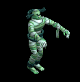
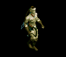
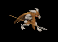
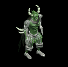
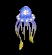
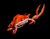
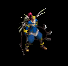
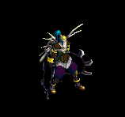
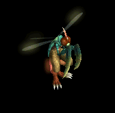
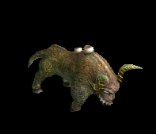

腰 をドロップするmob一覧
一覧ページへ
| リビングデッド | アンデット | 一般1 | |||||||
|---|---|---|---|---|---|---|---|---|---|
 | 投擲(410) | 牙(270) | イベント(410) | 腰(230) | 爪(210) | 帰還(160) | 双剣(270) | ||
| スプーク | アンデット | セミ1 | |||||||
 | 投擲(390) | スリング(260) | 状態異常回復1(390) | 腰(220) | 爪(200) | 帰還(160) | |||
| プレーガー | アンデット | 一般3 | |||||||
 | スリング(360) | ステッキ(240) | 弾(360) | 腰(200) | 首(180) | ブローチ(140) | |||
| ミイラ | アンデット | 一般2 | |||||||
 | 槍(380) | 杖(250) | 状態異常回復1(380) | 腰(210) | 手首(190) | 能力向上2(150) | 本(250) | 箒(380) | |
| 包帯人間 | アンデット | 一般3 | |||||||
 | 槍(360) | 杖(240) | 矢(360) | 腰(200) | 手首(180) | 能力向上2(140) | 本(240) | 箒(360) | 魔弾(360) |
| エンバームド | アンデット | 一般4 | |||||||
|  | 槍(300) | 鞭(200) | 状態異常回復1(300) | 腰(170) | 手首(150) | 能力向上2(120) | 箒(300) | ||
| マミー | アンデット | セミ1 | |||||||
 | 槍(390) | 杖(260) | 状態異常回復1(390) | 腰(220) | 手首(200) | 能力向上2(160) | 本(260) | 箒(390) | |
| マミーキング | アンデット | ボス1 | |||||||
 | 槍(470) | 鞭(310) | 状態異常回復1(470) | 腰(260) | 手首(240) | 能力向上2(190) | 箒(470) | ||
| ストラグラー | 人間 | 一般1 | |||||||
 | 杖(410) | スリング(270) | 弾(410) | 腰(230) | 首(210) | 能力向上2(160) | 本(410) | ||
| ダークサマナー | 人間 | 一般2 | |||||||
 | 鞭(380) | 投擲(250) | 弾(380) | 腰(210) | イヤリング(190) | 肩刺青(110) | |||
| レッドアイ所員 | 人間 | 一般3 | |||||||
|  | 鞭(360) | 投擲(240) | 弾(360) | 腰(200) | イヤリング(180) | 肩刺青(120) | |||
| デビルスカラー | 人間 | 一般4 | |||||||
 | 鞭(300) | 牙(200) | cP回復(300) | 腰(170) | イヤリング(150) | 肩刺青(130) | 双剣(200) | ||
| 降神術師 | 人間 | セミ2 | |||||||
 | 鞭(420) | スリング(280) | 弾(420) | 腰(230) | イヤリング(210) | 肩刺青(140) | |||
| 堕落予言者 | 人間 | ボス1 | |||||||
 | 鞭(470) | 投擲(310) | cP回復(470) | 腰(260) | イヤリング(240) | 肩刺青(150) | |||
| コボルト | 悪魔 | 一般1 | |||||||
 | 牙(410) | スリング(270) | 弾(410) | 腰(230) | 爪(210) | 肩刺青(120) | 双剣(410) | ||
| グレムリン | 悪魔 | 一般2 | |||||||
 | 牙(380) | スリング(250) | 弾(380) | 腰(210) | 爪(190) | 肩刺青(130) | 双剣(380) | ||
| ゴブリン | 悪魔 | 一般3 | |||||||
 | 牙(360) | スリング(240) | 弾(360) | 腰(200) | 爪(180) | 肩刺青(140) | 双剣(360) | ||
| ファミリア | 悪魔 | 一般4 | |||||||
 | 牙(300) | スリング(200) | 弾(300) | 腰(170) | 爪(150) | 肩刺青(150) | 双剣(300) | ||
| インプ | 悪魔 | セミ1 | |||||||
|  | 牙(390) | スリング(260) | 弾(390) | 腰(220) | 爪(200) | 肩刺青(160) | 双剣(390) | ||
| ピエンド | 悪魔 | 一般1 | |||||||
 | 鞭(410) | 杖(270) | 状態異常回復1(410) | 腰(230) | 指輪(210) | 十字架(180) | 本(270) | ||
| デーモン | 悪魔 | セミ2 | |||||||
|  | 鞭(420) | 杖(280) | cP回復(420) | 腰(230) | 指輪(210) | 十字架(200) | 本(280) | ||
| サタン | 悪魔 | ボス2 | |||||||
 | 鞭(490) | 杖(330) | 状態異常回復1(490) | 腰(270) | 指輪(250) | 十字架(220) | 本(330) | ||
| ストーントルド | 悪魔 | セミ3 | |||||||
 | none(450) | 鈍器(300) | 盾(450) | 腰(250) | 手首(230) | 能力向上2(180) | |||
| 飛海月 | 動物 | 一般1 | |||||||
|  | 鞭(410) | スリング(270) | 弾(410) | 腰(230) | 手首(210) | 帰還(160) | |||
| エアスライム | 動物 | 一般2 | |||||||
 | 鞭(380) | スリング(250) | 弾(380) | 腰(210) | イヤリング(190) | 特殊1(150) | |||
| アクアスライム | 動物 | 一般3 | |||||||
 | 鞭(360) | スリング(240) | 弾(360) | 腰(200) | 手首(180) | 帰還(140) | |||
| 水晶烏賊 | 動物 | セミ1 | |||||||
 | 鞭(390) | スリング(260) | 弾(390) | 腰(220) | 手首(200) | 能力向上2(160) | |||
| クラーケン | 動物 | ボス1 | |||||||
 | 鞭(470) | スリング(310) | 弾(470) | 腰(260) | 手首(240) | 帰還(190) | |||
| キャンサー | 動物 | ボス1 | |||||||
|  | 投擲(470) | 両手剣(310) | 状態異常回復1(470) | 腰(260) | 爪(240) | 宝石(190) | 鎌(310) | ||
| 鋏昆虫の群れ | 動物 | 一般2 | |||||||
 | 笛(380) | 翼(250) | イベント(380) | 腰(210) | 首(190) | 帰還(150) | 水晶(250) | ||
| リビングデッドEx | アンデット | 一般1 | |||||||
| 投擲(410) | 牙(270) | イベント(410) | 腰(230) | 爪(210) | 帰還(160) | 双剣(270) | ||
| スプークEx | アンデット | セミ1 | |||||||
| 投擲(450) | スリング(300) | 状態異常回復1(450) | 腰(250) | 爪(230) | 帰還(180) | |||
| プレーガーEx | アンデット | 一般3 | |||||||
| スリング(360) | ステッキ(240) | 弾(360) | 腰(200) | 首(180) | ブローチ(140) | |||
| ミイラEx | アンデット | 一般2 | |||||||
| 槍(380) | 杖(250) | 状態異常回復1(380) | 腰(210) | 手首(190) | 能力向上2(150) | 本(250) | 箒(380) | |
| 包帯人間Ex | アンデット | 一般3 | |||||||
| 槍(360) | 杖(240) | 矢(360) | 腰(200) | 手首(180) | 能力向上2(140) | 本(240) | 箒(360) | 魔弾(360) |
| エンバームドEx | アンデット | 一般4 | |||||||
| 槍(300) | 鞭(200) | 状態異常回復1(300) | 腰(170) | 手首(150) | 能力向上2(120) | 箒(300) | |||
| マミーEx | アンデット | セミ1 | |||||||
| 槍(450) | 杖(300) | 状態異常回復1(450) | 腰(250) | 手首(230) | 能力向上2(180) | 本(300) | 箒(450) | |
| マミーキングEx | アンデット | ボス1 | |||||||
| 槍(1200) | 鞭(800) | 状態異常回復1(1200) | 腰(670) | 手首(600) | 能力向上2(480) | 箒(1200) | ||
| ストラグラーEx | 人間 | 一般1 | |||||||
| 杖(410) | スリング(270) | 弾(410) | 腰(230) | 首(210) | 能力向上2(160) | 本(410) | ||
| ダークサマナーEx | 人間 | 一般2 | |||||||
| 鞭(380) | 投擲(250) | 弾(380) | 腰(210) | イヤリング(190) | 肩刺青(110) | |||
| レッドアイ所員Ex | 人間 | 一般3 | |||||||
| 鞭(360) | 投擲(240) | 弾(360) | 腰(200) | イヤリング(180) | 肩刺青(120) | ||||
| デビルスカラーEx | 人間 | 一般4 | |||||||
| 鞭(300) | 牙(200) | cP回復(300) | 腰(170) | イヤリング(150) | 肩刺青(130) | 双剣(200) | ||
| 降神術師Ex | 人間 | セミ2 | |||||||
| 鞭(650) | スリング(430) | 弾(650) | 腰(360) | イヤリング(330) | 肩刺青(140) | |||
| 堕落予言者Ex | 人間 | ボス1 | |||||||
| 鞭(1200) | 投擲(800) | cP回復(1200) | 腰(670) | イヤリング(600) | 肩刺青(150) | |||
| コボルトEx | 悪魔 | 一般1 | |||||||
| 牙(410) | スリング(270) | 弾(410) | 腰(230) | 爪(210) | 肩刺青(120) | 双剣(410) | ||
| グレムリンEx | 悪魔 | 一般2 | |||||||
| 牙(380) | スリング(250) | 弾(380) | 腰(210) | 爪(190) | 肩刺青(130) | 双剣(380) | ||
| ゴブリンEx | 悪魔 | 一般3 | |||||||
| 牙(360) | スリング(240) | 弾(360) | 腰(200) | 爪(180) | 肩刺青(140) | 双剣(360) | ||
| ファミリアEx | 悪魔 | 一般4 | |||||||
| 牙(300) | スリング(200) | 弾(300) | 腰(170) | 爪(150) | 肩刺青(150) | 双剣(300) | ||
| インプEx | 悪魔 | セミ1 | |||||||
| 牙(450) | スリング(300) | 弾(450) | 腰(250) | 爪(230) | 肩刺青(160) | 双剣(450) | |||
| ピエンドEx | 悪魔 | 一般1 | |||||||
| 鞭(410) | 杖(270) | 状態異常回復1(410) | 腰(230) | 指輪(210) | 十字架(180) | 本(270) | ||
| デーモンEx | 悪魔 | セミ2 | |||||||
| 鞭(650) | 杖(430) | cP回復(650) | 腰(360) | 指輪(330) | 十字架(200) | 本(430) | |||
| サタンEx | 悪魔 | ボス2 | |||||||
| 鞭(2000) | 杖(1330) | 状態異常回復1(2000) | 腰(1110) | 指輪(1000) | 十字架(220) | 本(1330) | ||
| ストーントルドEx | 悪魔 | セミ3 | |||||||
| none(800) | 鈍器(530) | 盾(800) | 腰(440) | 手首(400) | 能力向上2(320) | |||
| 飛海月Ex | 動物 | 一般1 | |||||||
| 鞭(410) | スリング(270) | 弾(410) | 腰(230) | 手首(210) | 帰還(160) | ||||
| エアスライムEx | 動物 | 一般2 | |||||||
| 鞭(380) | スリング(250) | 弾(380) | 腰(210) | イヤリング(190) | 特殊1(150) | |||
| アクアスライムEx | 動物 | 一般3 | |||||||
| 鞭(360) | スリング(240) | 弾(360) | 腰(200) | 手首(180) | 帰還(140) | |||
| 水晶烏賊Ex | 動物 | セミ1 | |||||||
| 鞭(450) | スリング(300) | 弾(450) | 腰(250) | 手首(230) | 能力向上2(180) | |||
| クラーケンEx | 動物 | ボス1 | |||||||
| 鞭(1200) | スリング(800) | 弾(1200) | 腰(670) | 手首(600) | 帰還(480) | |||
| キャンサーEx | 動物 | ボス1 | |||||||
| 投擲(1200) | 両手剣(800) | 状態異常回復1(1200) | 腰(670) | 爪(600) | 宝石(480) | 鎌(800) | |||
| 鋏昆虫の群れEx | 動物 | 一般2 | |||||||
| 笛(380) | 翼(250) | イベント(380) | 腰(210) | 首(190) | 帰還(150) | 水晶(250) | ||
| トランクマンEx | 神獣 | 一般3 | |||||||
 | 杖(360) | 鞭(240) | イベント(360) | 腰(200) | 指輪(180) | 能力向上1(140) | 本(360) | ||
| トレントEx | 神獣 | 一般4 | |||||||
 | 杖(300) | 両手剣(200) | cP回復(300) | 腰(170) | 冠(150) | 能力向上1(120) | 鎌(200) | 本(300) | |
| エンティングEx | 神獣 | セミ1 | |||||||
 | 杖(450) | 鈍器(300) | HP回復(450) | 腰(250) | イヤリング(230) | 能力向上1(180) | 本(450) | ||
| エントEx | 神獣 | ボス1 | |||||||
 | 杖(1200) | 槍(800) | cP回復(1200) | 腰(670) | イヤリング(600) | 能力向上1(480) | 本(1200) | 箒(800) | |
| ウィルオウィスプEx | 神獣 | セミ1 | |||||||
 | 投擲(450) | 弓(300) | 盾(450) | 腰(250) | 指輪(230) | 特殊1(180) | 銃(300) | ||
| ペールライトEx | 神獣 | ボス3 | |||||||
 | 笛(2800) | ステッキ(1870) | 盾(2800) | 腰(1560) | 手首(1400) | 帰還(1120) | |||
| リビングデッドZin | アンデット | 一般1 | |||||||
| 投擲(1210) | 牙(810) | イベント(1210) | 腰(670) | 爪(610) | 帰還(480) | 双剣(810) | ||
| スプクZin | アンデット | セミ1 | |||||||
| 投擲(650) | スリング(430) | 状態異常回復1(650) | 腰(360) | 爪(330) | 帰還(260) | |||
| プレーガーZin | アンデット | 一般3 | |||||||
| スリング(1560) | ステッキ(1040) | 弾(1560) | 腰(870) | 首(780) | ブローチ(140) | |||
| ミイラZin | アンデット | 一般2 | |||||||
| 槍(1380) | 杖(920) | 状態異常回復1(1380) | 腰(770) | 手首(690) | 能力向上2(550) | 本(920) | 箒(1380) | |
| 包帯人間Zin | アンデット | 一般3 | |||||||
| 槍(1560) | 杖(1040) | 矢(1560) | 腰(870) | 手首(780) | 能力向上2(620) | 本(1040) | 箒(1560) | 魔弾(1560) |
| エンバームドZin | アンデット | 一般4 | |||||||
| 槍(1200) | 鞭(800) | 状態異常回復1(1200) | 腰(670) | 手首(600) | 能力向上2(480) | 箒(1200) | |||
| マミーZin | アンデット | セミ1 | |||||||
| 槍(650) | 杖(430) | 状態異常回復1(650) | 腰(360) | 手首(330) | 能力向上2(260) | 本(430) | 箒(650) | |
| マミーキングZin | アンデット | ボス1 | |||||||
| 槍(1000) | 鞭(670) | 状態異常回復1(1000) | 腰(560) | 手首(500) | 能力向上2(400) | 箒(1000) | ||
| ストラグラーZin | 人間 | 一般1 | |||||||
| 杖(1210) | スリング(810) | 弾(1210) | 腰(670) | 首(610) | 能力向上2(480) | 本(1210) | ||
| ダークサマナーZin | 人間 | 一般2 | |||||||
| 鞭(1380) | 投擲(920) | 弾(1380) | 腰(770) | イヤリング(690) | 肩刺青(110) | |||
| レッドアイ所員Zin | 人間 | 一般3 | |||||||
| 鞭(1560) | 投擲(1040) | 弾(1560) | 腰(870) | イヤリング(780) | 肩刺青(120) | ||||
| デビルスカラーZin | 人間 | 一般4 | |||||||
| 鞭(1200) | 牙(800) | cP回復(1200) | 腰(670) | イヤリング(600) | 肩刺青(130) | 双剣(800) | ||
| 降神術師Zin | 人間 | セミ2 | |||||||
| 鞭(750) | スリング(500) | 弾(750) | 腰(420) | イヤリング(380) | 肩刺青(140) | |||
| 堕落予言者Zin | 人間 | ボス1 | |||||||
| 鞭(1000) | 投擲(670) | cP回復(1000) | 腰(560) | イヤリング(500) | 肩刺青(150) | |||
| コボルトZin | 悪魔 | 一般1 | |||||||
| 牙(1210) | スリング(810) | 弾(1210) | 腰(670) | 爪(610) | 肩刺青(120) | 双剣(1210) | ||
| グレムリンZin | 悪魔 | 一般2 | |||||||
| 牙(1380) | スリング(920) | 弾(1380) | 腰(770) | 爪(690) | 肩刺青(130) | 双剣(1380) | ||
| ゴブリンZin | 悪魔 | 一般3 | |||||||
| 牙(1560) | スリング(1040) | 弾(1560) | 腰(870) | 爪(780) | 肩刺青(140) | 双剣(1560) | ||
| ファミリアZin | 悪魔 | 一般4 | |||||||
| 牙(1200) | スリング(800) | 弾(1200) | 腰(670) | 爪(600) | 肩刺青(150) | 双剣(1200) | ||
| インプZin | 悪魔 | セミ1 | |||||||
| 牙(650) | スリング(430) | 弾(650) | 腰(360) | 爪(330) | 肩刺青(160) | 双剣(650) | |||
| ピエンドZin | 悪魔 | 一般1 | |||||||
| 鞭(1210) | 杖(810) | 状態異常回復1(1210) | 腰(670) | 指輪(610) | 十字架(180) | 本(810) | ||
| デーモンZin | 悪魔 | セミ2 | |||||||
| 鞭(750) | 杖(500) | cP回復(750) | 腰(420) | 指輪(380) | 十字架(200) | 本(500) | |||
| サタンZin | 悪魔 | ボス2 | |||||||
| 鞭(1100) | 杖(730) | 状態異常回復1(1100) | 腰(610) | 指輪(550) | 十字架(220) | 本(730) | ||
| ストーントルドZin | 悪魔 | セミ3 | |||||||
 | none(900) | 鈍器(600) | 盾(900) | 腰(500) | 手首(450) | 能力向上2(360) | |||
| 飛海月Zin | 動物 | 一般1 | |||||||
| 鞭(1210) | スリング(810) | 弾(1210) | 腰(670) | 手首(610) | 帰還(480) | ||||
| エアスライムZin | 動物 | 一般2 | |||||||
| 鞭(1380) | スリング(920) | 弾(1380) | 腰(770) | イヤリング(690) | 特殊1(550) | |||
| アクアスライムZin | 動物 | 一般3 | |||||||
| 鞭(1560) | スリング(1040) | 弾(1560) | 腰(870) | 手首(780) | 帰還(620) | |||
| 水晶烏賊Zin | 動物 | セミ1 | |||||||
| 鞭(650) | スリング(430) | 弾(650) | 腰(360) | 手首(330) | 能力向上2(260) | |||
| クラーケンZin | 動物 | ボス1 | |||||||
| 鞭(1000) | スリング(670) | 弾(1000) | 腰(560) | 手首(500) | 帰還(400) | |||
| キャンサーZin | 動物 | ボス1 | |||||||
| 投擲(1000) | 両手剣(670) | 状態異常回復1(1000) | 腰(560) | 爪(500) | 宝石(400) | 鎌(670) | |||
| 鋏昆虫の群れZin | 動物 | 一般2 | |||||||
| 笛(1380) | 翼(920) | イベント(1380) | 腰(770) | 首(690) | 帰還(550) | 水晶(920) | ||
| トランクマンZin | 神獣 | 一般3 | |||||||
| 杖(1560) | 鞭(1040) | イベント(1560) | 腰(870) | 指輪(780) | 能力向上1(620) | 本(1560) | ||
| トレントZin | 神獣 | 一般4 | |||||||
| 杖(1200) | 両手剣(800) | cP回復(1200) | 腰(670) | 冠(600) | 能力向上1(480) | 鎌(800) | 本(1200) | |
| エンティングZin | 神獣 | セミ1 | |||||||
| 杖(650) | 鈍器(430) | HP回復(650) | 腰(360) | イヤリング(330) | 能力向上1(260) | 本(650) | ||
| エントZin | 神獣 | ボス1 | |||||||
| 杖(1000) | 槍(670) | cP回復(1000) | 腰(560) | イヤリング(500) | 能力向上1(400) | 本(1000) | 箒(670) | |
| ウィルオウィスプZin | 神獣 | セミ1 | |||||||
| 投擲(650) | 弓(430) | 盾(650) | 腰(360) | 指輪(330) | 特殊1(260) | 銃(430) | ||
| ペールライトZin | 神獣 | ボス3 | |||||||
| 笛(1200) | ステッキ(800) | 盾(1200) | 腰(670) | 手首(600) | 帰還(480) | |||
 | 弓(1560) | 片手剣(1040) | 矢(1560) | グローブ(900) | 手首(780) | 腕刺青(170) | クロー(1040) | 銃(1560) | 魔弾(1560) |
| シーク信者(踊り子) Zin | 人間 | 一般3 | |||||||
 | 鎧(70) | ブローチ(200) | 弾(130) | 十字架(100) | 腰(30) | 翼(40) | 水晶(40) | ||
| シーク信者(踊り子)2 Zin | 人間 | セミ3 | |||||||
 | 鎧(180) | 首(530) | スリング(350) | 鎧(280) | 腰(70) | 翼(110) | 水晶(110) | ||
| シーク信者(踊り子)3 Zin | 人間 | ボス2 | |||||||
 | 鎧(450) | 首(1350) | cP回復(900) | 手首(720) | 腰(180) | 翼(270) | 水晶(270) | ||
| シーク信者(踊り子)4 Zin | 人間 | ボス3 | |||||||
 | 鎧(600) | 首(1800) | スリング(1200) | 手首(960) | 腰(240) | 翼(360) | 水晶(360) | ||
| シーク守護者1 Zin | 人間 | セミ1 | |||||||
 | 能力向上2(90) | 首(260) | スリング(180) | 手首(140) | 腰(40) | イベント(50) | |||
| シーク守護者2 Zin | 人間 | セミ3 | |||||||
 | 鍵(180) | 状態異常回復2(530) | スリング(350) | 鎧(280) | 腰(70) | 翼(110) | 水晶(110) | ||
| シーク守護者4 Zin | 人間 | ボス3 | |||||||
 | 鎧(600) | ブローチ(1800) | スリング(1200) | 手首(960) | 腰(240) | 翼(360) | 水晶(360) | ||
| シーク天使 Zin | 人間 | 一般3 | |||||||
 | 鎧(70) | 首(200) | 帰還(130) | 手首(100) | 腰(30) | 翼(40) | 水晶(40) | ||
| シーク天使1 Zin | 人間 | セミ1 | |||||||
 | 鎧(90) | 首(260) | スリング(180) | 手首(140) | 腰(40) | 翼(50) | 水晶(50) | ||
| シーク天使3 Zin | 人間 | ボス2 | |||||||
|  | 鎧(450) | ブローチ(1350) | スリング(900) | 手首(720) | 腰(180) | 翼(270) | 水晶(270) | ||
| シーク天使4 Zin | 人間 | ボス3 | |||||||
|  | 鎧(600) | 首(1800) | 腕刺青(1200) | 手首(960) | 腰(240) | 翼(360) | 水晶(360) | ||
| カマキリ戦士 Zin | 悪魔 | セミ2 | |||||||
 | 宝石(360) | 宝石(440) | 弾(180) | 能力向上1(110) | 腰(60) | 翼(30) | 水晶(30) | ||
| カマキリ戦士2 Zin | 悪魔 | ボス1 | |||||||
 | 鍵(650) | 鈍器(800) | 弾(330) | 槍(200) | 腰(100) | イベント(50) | 箒(200) | ||
| カマキリ戦士4 Zin | 悪魔 | ボス3 | |||||||
 | 投擲(1560) | 鈍器(1920) | cP回復(790) | 槍(480) | 腰(240) | 翼(120) | 箒(480) | 水晶(120) | |
| ペンティライダー1 Zin | 悪魔 | セミ2 | |||||||
 | 投擲(360) | 鈍器(440) | 弾(180) | 槍(110) | 腰(60) | 翼(30) | 箒(110) | 水晶(30) | |
| ペンティライダー3 Zin | 悪魔 | ボス1 | |||||||
 | 鍵(650) | 鈍器(800) | 帰還(330) | 槍(200) | 腰(100) | イベント(50) | 箒(200) | ||
| バッタ悪魔 Zin | 悪魔 | 一般4 | |||||||
|  | 投擲(130) | 鈍器(160) | 帰還(70) | cP回復(40) | 腰(20) | HP回復(10) | |||
| バッタ悪魔2 Zin | 悪魔 | セミ3 | |||||||
 | 投擲(460) | 鈍器(560) | 腕刺青(230) | 槍(140) | 腰(70) | 職業鎧(40) | 箒(140) | ||
| バッタ悪魔3 Zin | 悪魔 | ボス1 | |||||||
 | 宝石(650) | 鈍器(800) | 弾(330) | 能力向上1(200) | 腰(100) | 翼(50) | 水晶(50) | ||
| バッタ悪魔4 Zin | 悪魔 | ボス2 | |||||||
 | 投擲(1170) | 状態異常回復2(1440) | cP回復(590) | 槍(360) | 腰(180) | 翼(90) | 箒(360) | 水晶(90) | |
| パンプキンヘッド Zin | 悪魔 | 一般4 | |||||||
 | 指輪(130) | 状態異常回復2(160) | 帰還(70) | 能力向上1(40) | 腰(20) | グローブ(10) | |||
| パンプキンヘッド2 Zin | 悪魔 | セミ3 | |||||||
 | 鍵(460) | ブローチ(560) | cP回復(230) | 笛(140) | 腰(70) | グローブ(40) | |||
| パンプキンヘッド3 Zin | 悪魔 | ボス1 | |||||||
 | 指輪(650) | 弾(800) | 腕刺青(330) | 十字架(200) | 腰(100) | HP回復(50) | |||
| パンプキンヘッド4 Zin | 悪魔 | ボス2 | |||||||
 | 指輪(1170) | 首(1440) | 足(590) | 笛(360) | 腰(180) | グローブ(90) | |||
| ジャックランタン1 Zin | 悪魔 | セミ2 | |||||||
 | 指輪(360) | ブローチ(440) | 腕刺青(180) | 笛(110) | 腰(60) | グローブ(30) | |||
| ジャックランタン3 Zin | 悪魔 | ボス2 | |||||||
 | 能力向上2(1170) | 首(1440) | 帰還(590) | 笛(360) | 腰(180) | グローブ(90) | |||
| ジャックランタン4 Zin | 悪魔 | ボス3 | |||||||
 | 指輪(1560) | 弾(1920) | 足(790) | マント(480) | 腰(240) | グローブ(120) | |||
| エルダーパンプキン Zin | 悪魔 | セミ2 | |||||||
 | 指輪(360) | 首(440) | 弾(180) | 十字架(110) | 腰(60) | HP回復(30) | |||
| エルダーパンプキン2 Zin | 悪魔 | ボス1 | |||||||
 | 指輪(650) | 状態異常回復2(800) | 腕刺青(330) | 能力向上1(200) | 腰(100) | グローブ(50) | |||
| エルダーパンプキン4 Zin | 悪魔 | ボス3 | |||||||
 | 能力向上2(1560) | 首(1920) | cP回復(790) | 笛(480) | 腰(240) | グローブ(120) | |||
| ダークバッファロ Zin | 神獣 | 一般3 | |||||||
|  | 能力向上2(120) | 爪(170) | cP回復(90) | 能力向上1(10) | 腰(30) | イベント(70) | |||
| ダークバッファロ2 Zin | 神獣 | セミ2 | |||||||
 | 指輪(250) | 爪(360) | 腕刺青(190) | 鞭(30) | 腰(60) | HP回復(140) | |||
| ダークバッファロ4 Zin | 神獣 | ボス2 | |||||||
 | 指輪(810) | ブローチ(1170) | 弾(630) | 鞭(90) | 腰(180) | 兜・帽子(450) | |||
| 赤パネルバッファ1 Zin | 神獣 | セミ2 | |||||||
 | 指輪(250) | 爪(360) | 弾(190) | 能力向上1(30) | 腰(60) | 兜・帽子(140) | |||
| 赤パネルバッファ2 Zin | 神獣 | セミ3 | |||||||
 | 能力向上2(320) | 爪(460) | 帰還(250) | 鞭(40) | 腰(70) | イベント(180) | |||
| 赤パネルバッファ3 Zin | 神獣 | ボス2 | |||||||
 | 指輪(810) | ブローチ(1170) | 弾(630) | 鞭(90) | 腰(180) | 兜・帽子(450) | |||
| エメラルドバッファ Zin | 神獣 | セミ1 | |||||||
 | 指輪(160) | ブローチ(230) | 弾(120) | 鞭(20) | 腰(40) | 兜・帽子(90) | |||
| エメラルドバッファ2 Zin | 神獣 | セミ3 | |||||||
 | 指輪(320) | 爪(460) | 弾(250) | 鞭(40) | 腰(70) | 兜・帽子(180) | |||
| エメラルドバッファ3 Zin | 神獣 | ボス2 | |||||||
 | 指輪(810) | 状態異常回復2(1170) | 帰還(630) | 鞭(90) | 腰(180) | 兜・帽子(450) | |||
| エメラルドバッファ4 Zin | 神獣 | ボス3 | |||||||
 | 指輪(1080) | 爪(1560) | 弾(840) | 鞭(120) | 腰(240) | HP回復(600) | |||
| 泥棒 | 人間 | 一般1 | |||||||
| 杖(410) | スリング(270) | 弾(410) | 腰(230) | 首(210) | 能力向上2(160) | 本(410) | ||
| 泥棒 Ex | 人間 | 一般1 | |||||||
| 杖(410) | スリング(270) | 弾(410) | 腰(230) | 首(210) | 能力向上2(160) | 本(410) | ||
| ゼリーフィッシュ | 動物 | 一般1 | |||||||
| 鞭(410) | スリング(270) | 弾(410) | 腰(230) | 手首(210) | 帰還(160) | ||||
| スライム | 動物 | 一般2 | |||||||
| 鞭(380) | スリング(250) | 弾(380) | 腰(210) | イヤリング(190) | 特殊1(150) | |||
| オーカーゼリー | 動物 | 一般3 | |||||||
| 鞭(360) | スリング(240) | 弾(360) | 腰(200) | 手首(180) | 帰還(140) | |||
| クリスタルイカ | 動物 | セミ1 | |||||||
| 鞭(390) | スリング(260) | 弾(390) | 腰(220) | 手首(200) | 能力向上2(160) | |||
| ダイオウイカ | 動物 | ボス1 | |||||||
| 鞭(470) | スリング(310) | 弾(470) | 腰(260) | 手首(240) | 帰還(190) | |||
| ゼリーフィッシュ Ex | 動物 | 一般1 | |||||||
| 鞭(410) | スリング(270) | 弾(410) | 腰(230) | 手首(210) | 帰還(160) | ||||
| スライム Ex | 動物 | 一般2 | |||||||
| 鞭(380) | スリング(250) | 弾(380) | 腰(210) | イヤリング(190) | 特殊1(150) | |||
| オーカーゼリー Ex | 動物 | 一般3 | |||||||
| 鞭(360) | スリング(240) | 弾(360) | 腰(200) | 手首(180) | 帰還(140) | |||
| クリスタルイカ Ex | 動物 | セミ1 | |||||||
| 鞭(450) | スリング(300) | 弾(450) | 腰(250) | 手首(230) | 能力向上2(180) | |||
| ダイオウイカ Ex | 動物 | ボス1 | |||||||
| 鞭(1200) | スリング(800) | 弾(1200) | 腰(670) | 手首(600) | 帰還(480) | |||
| 昆虫の大群 | 動物 | 一般2 | |||||||
| 笛(380) | 翼(250) | イベント(380) | 腰(210) | 首(190) | 帰還(150) | 水晶(250) | ||
| 昆虫の大群 Ex | 動物 | 一般2 | |||||||
| 笛(380) | 翼(250) | イベント(380) | 腰(210) | 首(190) | 帰還(150) | 水晶(250) | ||
| 時の旅人 Zin | 人間 | 一般4 | |||||||
| 鎧(70) | ブローチ(200) | 弾(130) | 十字架(100) | 腰(30) | 翼(40) | 水晶(40) | ||
| かまいたち Zin | 悪魔 | 一般4 | |||||||
| 宝石(360) | 宝石(440) | 弾(180) | 能力向上1(110) | 腰(60) | 翼(30) | 水晶(30) | ||
| ジャックランタン Zin | 悪魔 | 一般4 | |||||||
| 指輪(130) | 状態異常回復2(160) | 帰還(70) | 能力向上1(40) | 腰(20) | グローブ(10) | |||
| ゴルゴン Zin | 神獣 | 一般4 | |||||||
| 能力向上2(120) | 爪(170) | cP回復(90) | 能力向上1(10) | 腰(30) | イベント(70) | ||||
| 時の苗木 Zin | 神獣 | セミ1 | |||||||
| 杖(1560) | 鞭(1040) | イベント(1560) | 腰(870) | 指輪(780) | 能力向上1(620) | 本(1560) | ||
| 時の大樹 Zin | 神獣 | セミ1 | |||||||
| 杖(1200) | 両手剣(800) | cP回復(1200) | 腰(670) | 冠(600) | 能力向上1(480) | 鎌(800) | 本(1200) | |
| 時の老樹 Zin | 神獣 | セミ1 | |||||||
| 杖(650) | 鈍器(430) | HP回復(650) | 腰(360) | イヤリング(330) | 能力向上1(260) | 本(650) | ||
| デビルスカラー Ex[2] | 人間 | 一般4 | |||||||
| 鞭(300) | 牙(200) | cP回復(300) | 腰(170) | イヤリング(150) | 肩刺青(130) | 双剣(200) | ||
| かまいたち Zin | 悪魔 | 一般4 | |||||||
| 宝石(360) | 宝石(440) | 弾(180) | 能力向上1(110) | 腰(60) | 翼(30) | 水晶(30) | ||
| ジャックランタン Zin | 悪魔 | 一般4 | |||||||
| 指輪(130) | 状態異常回復2(160) | 帰還(70) | 能力向上1(40) | 腰(20) | グローブ(10) | |||
| ゴルゴン Zin | 神獣 | 一般4 | |||||||
| 能力向上2(120) | 爪(170) | cP回復(90) | 能力向上1(10) | 腰(30) | イベント(70) | ||||
| 時の旅人 Zin | 人間 | 一般4 | |||||||
| 鎧(70) | ブローチ(200) | 弾(130) | 十字架(100) | 腰(30) | 翼(40) | 水晶(40) | ||
| プレーガーEv | アンデット | 一般3 | |||||||
| スリング(1560) | ステッキ(1040) | 弾(1560) | 腰(870) | 首(780) | ブローチ(140) | |||
| 包帯人間Ev | アンデット | 一般3 | |||||||
| 槍(1560) | 杖(1040) | 矢(1560) | 腰(870) | 手首(780) | 能力向上2(620) | 本(1040) | 箒(1560) | 魔弾(1560) |
| レッドアイ所員Ev | 人間 | 一般3 | |||||||
| 鞭(1560) | 投擲(1040) | 弾(1560) | 腰(870) | イヤリング(780) | 肩刺青(120) | ||||
| ゴブリンEv | 悪魔 | 一般3 | |||||||
| 牙(1560) | スリング(1040) | 弾(1560) | 腰(870) | 爪(780) | 肩刺青(140) | 双剣(1560) | ||
| アクアスライムEv | 動物 | 一般3 | |||||||
| 鞭(1560) | スリング(1040) | 弾(1560) | 腰(870) | 手首(780) | 帰還(620) | |||
| トランクマンEv | 神獣 | 一般3 | |||||||
| 杖(1560) | 鞭(1040) | イベント(1560) | 腰(870) | 指輪(780) | 能力向上1(620) | 本(1560) | ||
| トレントEv | 神獣 | 一般4 | |||||||
| 杖(1200) | 両手剣(800) | cP回復(1200) | 腰(670) | 冠(600) | 能力向上1(480) | 鎌(800) | 本(1200) | |
| ファミリアEv | 悪魔 | 一般4 | |||||||
| 牙(1200) | スリング(800) | 弾(1200) | 腰(670) | 爪(600) | 肩刺青(150) | 双剣(1200) | ||
| デビルスカラーEv | 人間 | 一般4 | |||||||
| 鞭(1200) | 牙(800) | cP回復(1200) | 腰(670) | イヤリング(600) | 肩刺青(130) | 双剣(800) | ||
| エンバームドEv | アンデット | 一般4 | |||||||
| 槍(1200) | 鞭(800) | 状態異常回復1(1200) | 腰(670) | 手首(600) | 能力向上2(480) | 箒(1200) | |||
| 鬼イナゴSp | 悪魔 | 一般4 | |||||||
| 投擲(1100) | 鈍器(800) | 帰還(300) | cP回復(400) | 腰(700) | HP回復(400) | |||
| ジャックランタン4 Sp | 悪魔 | 一般4 | |||||||
| 指輪(1300) | 状態異常回復2(1500) | 帰還(700) | 能力向上1(400) | 腰(200) | グローブ(100) | |||
| エアスライムSp | 動物 | 一般4 | |||||||
| 鞭(1300) | スリング(900) | 弾(1400) | 腰(700) | イヤリング(700) | 特殊1(600) | |||
| アクアスライムSp | 動物 | 一般4 | |||||||
| 鞭(1500) | スリング(1000) | 弾(1600) | 腰(900) | 手首(800) | 帰還(600) | |||
| クラーケンSp | 動物 | 一般4 | |||||||
| 鞭(1000) | スリング(670) | 弾(1000) | 腰(560) | 手首(500) | 帰還(400) | |||
| インプSp | 悪魔 | 一般4 | |||||||
| 牙(1200) | スリング(700) | 弾(600) | 腰(400) | 爪(300) | 肩刺青(700) | 双剣(1200) | ||
| ピエンドSp | 悪魔 | 一般4 | |||||||
| 鞭(1200) | 杖(800) | 状態異常回復1(1200) | 腰(700) | 指輪(600) | 十字架(200) | 本(800) | ||
| デーモンSp | 悪魔 | セミ1 | |||||||
| 鞭(750) | 杖(500) | cP回復(750) | 腰(400) | 指輪(400) | 十字架(200) | 本(500) | ||
| パンプキンヘッドSp | 悪魔 | 一般4 | |||||||
| 指輪(1300) | 状態異常回復2(1500) | 帰還(700) | 能力向上1(400) | 腰(200) | グローブ(100) | |||
| 覚醒パンプキンZin | 悪魔 | セミ1 | |||||||
 | 指輪(130) | 状態異常回復2(160) | 帰還(70) | 能力向上1(40) | 腰(20) | グローブ(10) | |||
| 踊り子 Sp | 人間 | 一般4 | |||||||
| 鎧(70) | ブローチ(200) | 弾(130) | 十字架(100) | 腰(30) | 翼(40) | 水晶(40) |